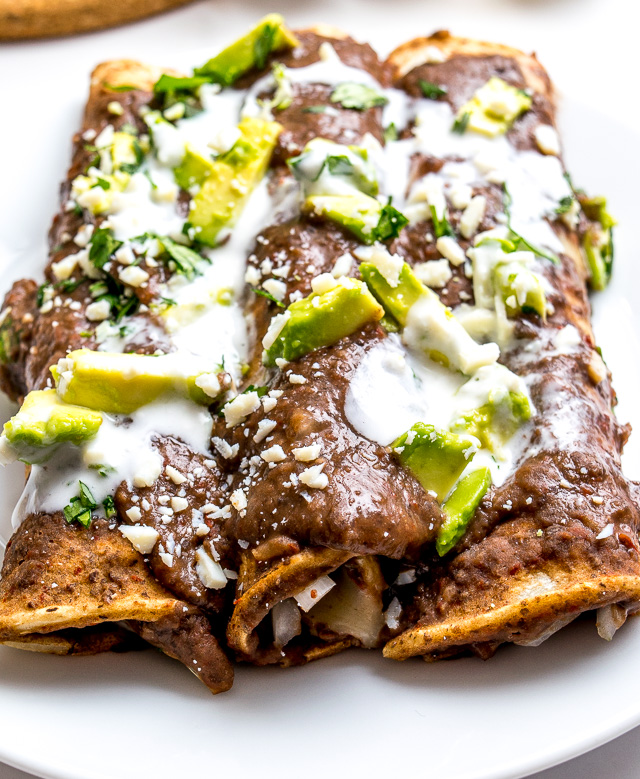

Enfrijoladas

Enfrijoladas are made by frying corn tortillas in oil, and then letting them soak in beans.
Ingredients
- Tortillas
- Vegetable Oil
- Favorite Kind of beans
- Cheese
Steps
- First, heat up your beans and oil.
- Next, fry your tortilla on each side for around 30 seconds.
- Then, dip your tortilla into your beans. Beans should be slightly watery.
- Finally, place the soaked tortilla on a plate, and roll it up. You can roll chicken into the tortilla, and place cheese on top.
Home